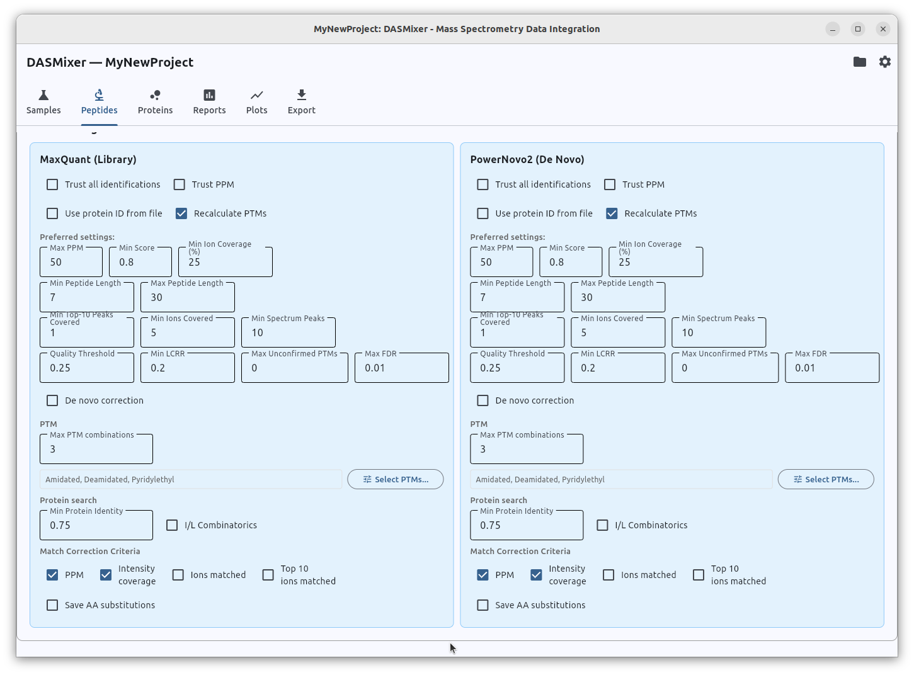

Calculate peptides and review identifications
Note: before proceed with this guide is highly recomended to read the Concepts page to understand the terms and indicators discussed below.
Peptides tab is composed from the set of functional blocks described in details below:
- Actions
- Protein sequence library
- Ion match settings
- Tool settings
- Search and view identifications
Common settings and actions

Actions section contains following buttons: - "Calculate peptides" to run the whole pipeline - Buttons to run separate subprocesses: - Select preferred - Calculate ion coverage - Match proteins to identifications - Save settings - Clear Calculations: deletes process results to allow recalculation
Protein sequence library allows user to import .fasta library of protein sequence to search. It also offers "Max accepts/Max rejects" settings to peptide search.
Ion matching settings is common configuration for all tools. These parameters allow to select ion types considered when calculating intensity coverage, fragment PPM threshold and fragment charges. Also settings in this field control spectre refinement: allowed charges to correct and maximum isotope offset value. Final part of this block is selection critera. If project contain identifications from multiple tools, this radio button defines what criteria will be used to select preferred identification for the spectre if there's more than one.
Tool settings section

There is a tools settings displayed below. For every tool added to project, this section displays the same set of parameters.
Known minor issue: if tool was added and does not display in this section, simply close the project and open it again
Tool settings contain the following sections: - Main checkboxes - Preferred settings - PTM - Protein search
Main tool checkboxes
Main checkboxes are: - Trust all identifications: if selected, all the identifications provided by tool will be selected as preferred disregarding ion coverage and other criteria. They will be also always preferred against other identifications of the same spectra - Trust PPM: if checked, DASMixer will not overwrite ppm values loaded from identifications file - Use protein ID from file: DASMixer will not try to search given peptides in protein database and use protein ids imported from identifications file. Make sure that "Import protein IDs" checkbox were checked while identifications import for this tool. - Recalculate PTMs: enabled by default. If checked, DASMixer will try to recalculate PTMs in the identifications sequence if it does not pass PPM threshold.
Preferred settings
Preferred settings block includes set of thresholds of reliability of identifications. They already have reasonable default values but can be fine-tuned by user. The list of controls with descriptions presented below:
| Parameter | Description | Recommended for de novo |
Recommended for DB |
|---|---|---|---|
| Max PPM | Upper limit for absolute mass error in ppm | 50 | 10 |
| Min score | Minimum search engine score¹ | 0.7 | 0.0 |
| Min ion Coverage (%) | Minimum ion coverage for identification | 15-25 | 15-25 |
| Min peptide lenght | Minimum lenght of the canonical sequence | 5-7 | 7 |
| Max peptide lenght | Maximum lenght of the canonical sequence | 30 | 30-45² |
| Min top-10 peaks covered | Minimum amount of top spectrum peaks covered by fragment ions | 1 | 1 |
| Min Ions covered | Minimum amount of fragment matches | 5-7 | 7 |
| Min spectrum peaks | Minimum total amount of peaks in spectrum | 10 | 7-10³ |
| Quality threshold | Minimum Quality value | 0.15-0.25 | 0.15-0.25 |
| Min LCRR | Minimum Longest Consequtive Run Ratio value | 0.15-0.25 | 0.15-0.25 |
| Max unconfirmed PTMs | Maximum of PTMs not confirmed by ion fragmentation⁴ | 1-2 | 1 |
| Max FDR | Max value for per-PSM FDR if it is reported by search engine | 0.0 | 0.01 |
| De novo correction | Enables de novo correction for sequences found in proteins | Yes | No |
Physical meaning and calculation formulas for these values described in Concepts page. Same with de novo correction. Notes: 1. DASMixer does not normalize search engine scores, so value depends on the values provided. For de novo engines its most common to use 0...1 values. For database search we recommend to disable score threshold (by setting 0.0) if results are loaded after FDR filtering. 2. Higher values of max peptide lenght can be recomended for engines known to worker well with longer peptides, mostly non-autoregression models such as PowerNovo2, Pi-Prime Nove. 3. Lower min spectrum peaks can be useful for DIA processing 4. Pasing with 1 skip is useful while Unconfirmed PTMs algorithm in DASMixer is not perfect yet. We recommend to lower this value if PTMs are subject of your research
PTM Settings
This settings section is enabled if you choose to Recalculate PTMs. It has controls: - Max PTM combinations: maximum PTMs that DASMixer can apply when processing the sequence. Increasing number can lead to better results but with cost of increase processing time - Select PTMs: allow user to change the list of PTMs DASMixer will try to apply for sequence refinement. "Amidated", "Deamidated" and "Pyridilethyl" are enabled by default. You can select more, but it will slower the processing. PTM configuration is described separately

Protein search
Settings applied to protein match. Detailed in the table below:
| Parameter | Description | Recommended for de novo |
Recommended for DB |
|---|---|---|---|
| Min protein identity | Minimum required identity between sequence of identification and sequence in protein DB | 0.7-0.8 | 1.0 |
| I/L combinatorics | Consider leucine/isoleucine combination when matching proteins | Yes | No |
| Match correction criteria | List of criteria that allows DASMixer to trust matched sequence more than identified one | PPM, Intensity coverage | N/A |
| Save AA substitutions | Save "AA substitution" flag for sequences identified better than closest match in protein | Yes | No |
Important note about calculation time
Almost every setting parameter has correlation to one or more calculation processes performed by DASMixer. Processes are not equal by time-consumption and it should be considered by user. It also depend on amount of identifications.
Database search engines commonly produce identifications for about 20% of spectra in spectre file while de novo commonly produces identifications for almost every spectre in file (while about the same 20% can be trusted). Keep the amount of identifications imported im mind launching the processes.
If you have your DASMixer project stored at network storage or on HDD drive, it can also affect the timing of proceses. To increase processing time with cost of higher RAM usage, you can change batch size limits in system settings view.
Processes timings can be taken for here (for PC with 8 core CPU and M.2 SSD): - Ion matching: 3-5 minutes for 20000 identifications - Protein matching without de novo correction: 0.5-1 minutes for 20000 identifications - Protein matching with de novo correction/AA substitutions: 2-4 minutes for 20000 identifications - Preferred selection: 1-10 seconds per sample
Important conclusion: it is crucial for large projects to properly set the Ion matching parameters and protein search parameters before any calculations started as it can take hours to recalculate everyting in large project. But preferred selection thresholds can be a subject to refinement after the heavy calculations.
Common process pipeline
You common order of actions is: 1. Open peptides tab 2. Import protein library 3. Adjust ion match parameters 4. Adjust tools parameters 5. Click "Calculate peptides" green button. 6. Wait until completed!